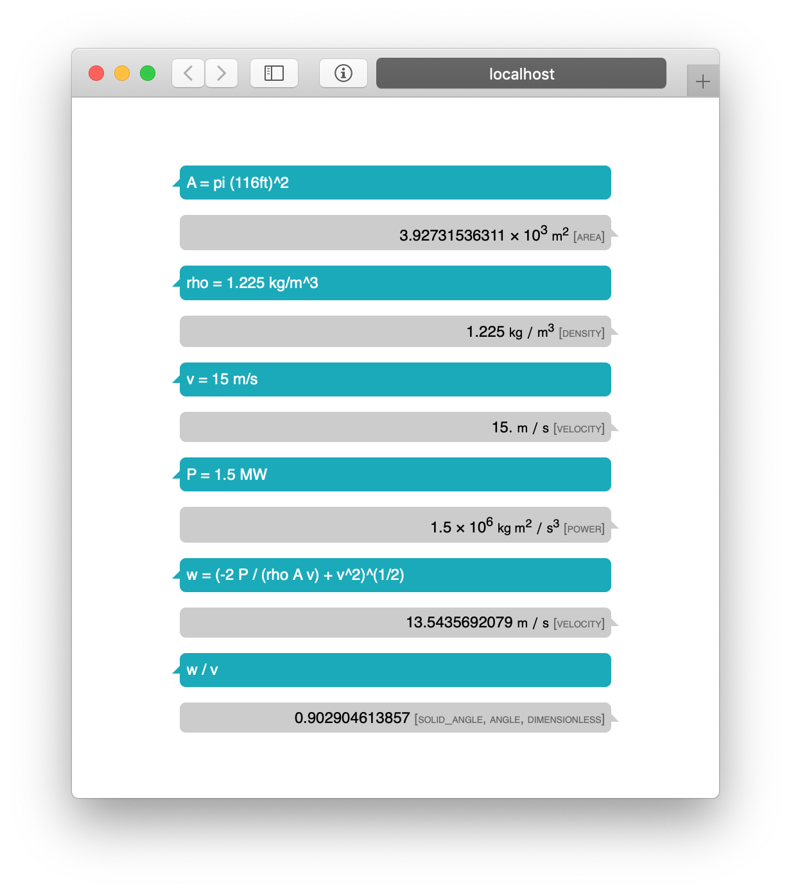

Windmills on my Mind
Some fast recreational physics
Wednesday, March 27, 2019 · 2 min read
Quick back-of-the-envelope analysis of a windmill, just for fun.
According to National Wind Watch a typical windmill is a GE 1.5-megawatt model which has 116-ft blades.
Let’s say the wind speed is $ v $, which is typically 10-15 m/s on a good day. Then in time $ t $ the volume of air that passes across the windmill is a cylinder of height $ tv $ and area $ \pi r^2$. Air’s density, $ \rho $, is around 1.225 kilograms per cubic meter. This gives a total mass of $ M = \rho tv\pi r^2 $. Taking $ v $ to be a modest 10 m/s, this works out to 48 metric tons of air per second.
Now let’s apply conservation of energy on this mass of air. Initial energy is $ Mv^2 / 2 $ and final energy is $ Mw^2/2 $, and the difference is on the order of the energy output, which is a function of the power output and $ t $ assuming reasonable efficiency in the turbine.
So, we have $ \rho tv\pi r^2 v^2 / 2 - \rho tv\pi r^2 w^2 /2 = Pt $. Time cancels, which is comforting since this is a continuous process. The equation that’s left suggests that power output of a windmill is proportional to the cube of the wind speed!
Another thing to think about is how much the wind slows down by. Solving for $ w $ and taking $ P $ to be 1.5 MW, we have $ w = \sqrt{ \frac{2P/\rho \pi r^2 - v^3 }{-v}} $. For 15 m/s winds, this means wind slows down by around 10% because of the windmill.
Actually this wasn’t “just for fun,” it was to show off initial progress on my side-project. :-)

Oh, and an unresolved question: because air is coming into the windmill faster than it’s going out, the momentum flux across the plane of the windmill is net negative. Applying Gauss’ law, we would expect a buildup of air in the windmill, which obviously doesn’t happen. What’s wrong?